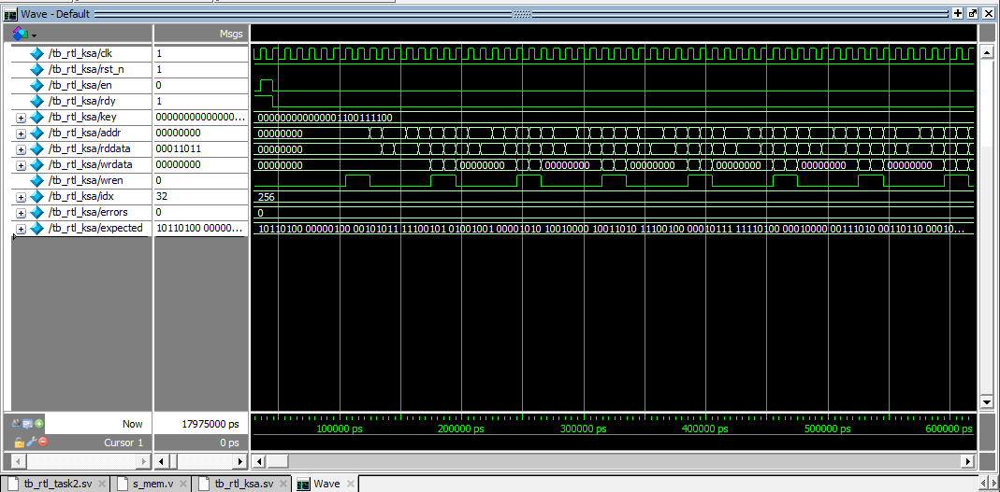
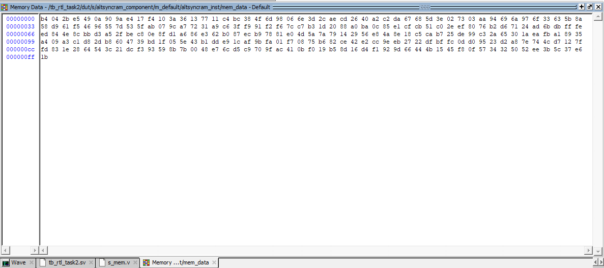

Quad-Core ARC4 Cracker
Abstract
I built a quad-core ARC4 brute-force accelerator on the DE1-SoC to recover unknown 24-bit keys from encrypted strings. Each core implements ARC4's key-scheduling (KSA) and pseudo-random generation (PRGA) in hardware, while a top level controller manages key assignment, early exit on success, and storage of candidate plaintexts in on-chip M10K memories.

High level block diagram
Goals
- Implement a cycle-accurate ARC4 KSA and PRGA engine in SystemVerilog.
- Scale to a quad-core architecture with strided keyspace partitioning.
- Use early reject checks on the decrypted prefix to reduce average cycles per key.
Architecture
The design is organized around a Quad Crack Engine that instantiates four identical ARC4 cores. Ciphertext bytes are stored in a dedicated CT M10K, while decrypted bytes from the winning key are written into a PT M10K. A controller sequences the search: it seeds each core with a unique starting key, advances keys in a strided pattern, and asserts a global stop when any core reports a match.
Modules
- ARC4 Core Implements a 256-byte S-box, full KSA, and PRGA. For each key, it decrypts a prefix of the ciphertext, applies length and ASCII checks, and signals a candidate hit if the plaintext looks valid.
- Quad Crack Engine Wraps four cores and distributes keys using a strided
scheme (core i searches keys
start + i, start + i + 4, ...). - Controller Tracks search progress, captures the first valid key, and switches the PT M10K into "write" mode so the complete plaintext can be stored for inspection.
Verification
Verification was done at three levels: ARC4 core validation, memory correctness, and full-system multi-core testing. I first validated the ARC4 key-scheduling algorithm using a dedicated KSA testbench that compares the hardware S-box against a reference vector. The waveform below shows the core stepping through all 256 indices and finishing with zero mismatches.

KSA testbench waveform
After confirming KSA timing and control, I inspected the S-box contents directly in the
ModelSim memory viewer. The dump below shows the final S-box state inside the
altsyncram instance after KSA completes. These values match the expected ARC4
permutation for the test key, confirming both algorithm correctness and proper M10K wiring.

Final S-box contents after KSA
With the ARC4 core validated, I ran full-system tests using the quad-core engine. These tests checked correct strided key assignment across cores, priority selection when multiple cores find candidate plaintexts, and global early-stop behavior. End-to-end simulations verified that the system recovers the 24-bit key and produces the correct plaintext.
Results
- The quad-core engine successfully recovers the unknown 24-bit key and decrypts the target plaintext on the DE1-SoC.
- Strided key distribution and early-reject checks significantly reduce average cycles per key compared to a naive single-core design.
- CT and PT M10K memories make it easy to inspect ARC4 state and decrypted output directly in ModelSim.